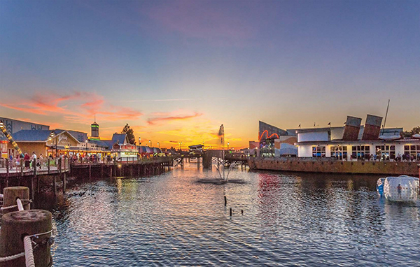
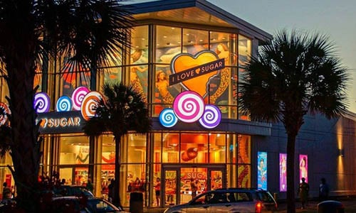
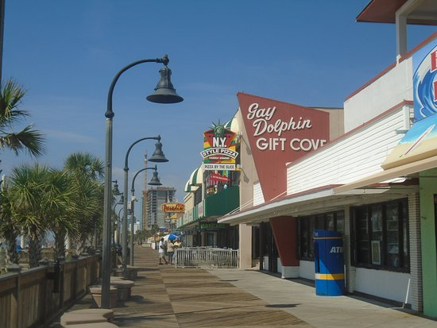

Broadway at the Beach - Outdoor Shopping
Welcome to Broadway at the Beach! Enjoy a pleathera of stores, restaurants, attractions, activities, and more! See all the amazing stores and what they have to offer as you walk through our colorfully designed streets. Stop by the stupid factory to get yourself a dumb or funny T-shirt. Get enormous amounts of candy at It'Sugar. Cross over the bridge into the more reasturant-populated area of the mall. Enjoy the wonders provided at our minature carnival, and even watch it light up at night. Stop by our very own Dave and Busters at the very back of the mall, and arcade all of your pre-vacation troubkes away! These are just some of the many things offered up in this place. Make sure to stop by on your next trip down to myrtle beach!
I love Sugar - Candy Centric Shopping
Walking down the boardwalk can be exhausting, but you can make it a treat by stopping by I Love Sugar. The shelves are stocked from top to bottom with every type of candy imaginable, and even some sugary snacks that aren't available anywhere else. Grab a bag and stuff it with a custom candy combination to take it home and snack away, Or fill it from our 12-foot-high candy dispenser wall. We'll make sure you're happy and sugar-ready when you're on your way out.
Gay Dolphin - Gift Cove
Come down to the Gay Dolphin down at ripley's. Enjoy from a plethera of an amazing amount of pool and beach gear, toys, and more! Find yourself a new license plate, take in the serenity of the boardwalk, or even meet our mascot. He gets lost at times, so make sure to redirect him to the store if you see him wandering about. Make sure to visit our cove next time you plan on having some fun down in myrtle beach!